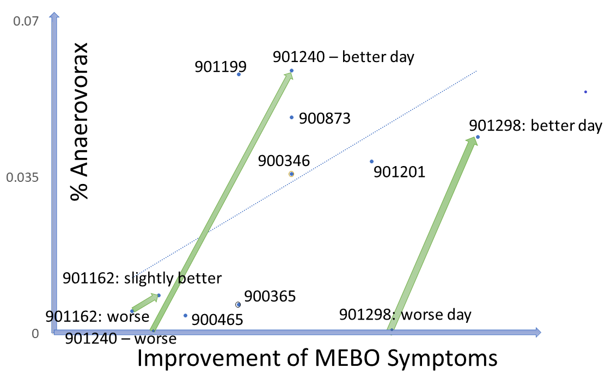
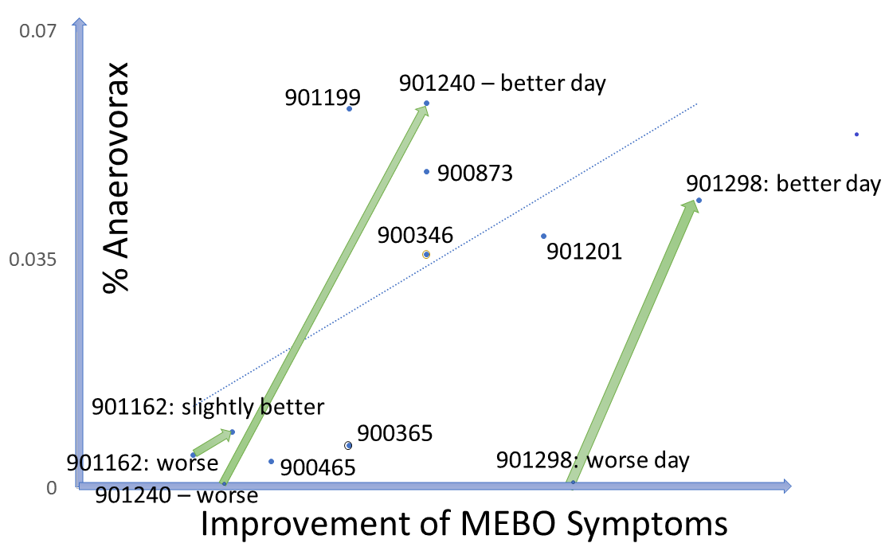

Preliminary results of NCT03582826
NCT03582826: By now, 89 uBiome kits were registered in our Quality of Life form (out of 300+ sets sent). 16 volunteers have submitted all 3 samples and 23 registered one or two kits. Over half of our participants have not yet started the study. We hope that this post will answer some of their questions on where to start.
The goal of MEBO Gut Microbiome study is to identify microbial communities associated with flare ups and remission of systematic malodor or PATM conditions. Participants are asked to answer MEBO Quality of Life (QoL) questionnaire about the last 24 hrs before every sample is taken. The Questionnaire is embedded into English and Spanish posts about the study. The answers are used to calculate total QoL score that increases with less odor and more wellbeing. The questionnaire evaluates physical health, psychological health, social support and environment such as diet and exercise. A separate score is calculated for MEBO (malodor/PATM) symptoms.
This post is about preliminary results of the first 41 uBiome kits representing samples from 24 participants. Quality of Life scores varied from 55 to 149 (best, "ideal" quality of life would be 150), while MEBO scores ranged from 3 (experienced MEBO/PATM symptoms "all the time" and odor was lingering for hours at 10 feet and farther) to 25 (100% odor free).
The pie chart on the right shows social environment for MEBO volunteers: almost half of study participants had active social lives interacting with over 8 people per day. Almost 20% of social interactions were entirely positive, while 10% were entirely negative. Social support did not correlate with MEBO symptoms and it was not predictor nor protective of malodor.
 Graphs of depressive feelings vs odors is another prove that even with stress as a trigger, body odors are not all in your head. Obviously, those free of malodors tend to be happier, but it's possible to control depression even with worst MEBO symptoms and this, alone, does not help to control the symptoms.
Graphs of depressive feelings vs odors is another prove that even with stress as a trigger, body odors are not all in your head. Obviously, those free of malodors tend to be happier, but it's possible to control depression even with worst MEBO symptoms and this, alone, does not help to control the symptoms.
uBiome provides a multitude of measurements characterizing gut microbiomes. One of the most widely used metrics is gut diversity metrics.
 Microbial diversity is cornerstone of a good health and decreased diversity is likely to be associated with poor wellbeing including malodors. Our data, however, show that most MEBO volunteers have healthy diversity scores that do not correlate with incidence of odors. Correlation is observed only for cases of very low, unhealthy diversity, especially for total quality of life scores as opposed to just malodor symptoms. Even more so, MEBO volunteers in remission, completely free of odors, had healthy, but not the very best diversity scores.
Microbial diversity is cornerstone of a good health and decreased diversity is likely to be associated with poor wellbeing including malodors. Our data, however, show that most MEBO volunteers have healthy diversity scores that do not correlate with incidence of odors. Correlation is observed only for cases of very low, unhealthy diversity, especially for total quality of life scores as opposed to just malodor symptoms. Even more so, MEBO volunteers in remission, completely free of odors, had healthy, but not the very best diversity scores.
In extremely diverse communities, people may be less inclined to trust each other, vote and volunteer for activities. In people not suffering from uncontrollable odors, microbes and hosts have a balanced dialogue, and form symbiotic relationships beneficial for both parties.
Could it be that MEBO sufferers have more "smelly" bacteria and less bacteria neutralizing the smell? Levels of traditional probiotic strains in the study participants do not seem to correlate with their odor levels. As more data is accumulated, interesting patterns are emerging for less common bacteria. An example is Anaerovorax, bacterium that processes putrid-smelling compounds produced by clostridia, pseudomonads, lactic acid and other bacteria from amino acids in food. Anaerovorax is observed in only 3% of uBiome samples, but it is present in a quarter of MEBO participants. Plotting its levels in all samples with Anaerovorax present against the scores representing improvement of MEBO symptoms (from worst odor to no odor), shows a clear trendline - the more Anaerovorax, the less odor. We note that this seem to be the case for ONLY a subset of study participants. For example, participants #901298 and #901240 who contributed 2 samples each into the first 41-sample-set, had 0 Anaerovorax on their worse day and over 0.03% Anaerovorax on their better days. # 901240 submitted 2 "bad day" samples (which is perfectly fine - as it still yielded much needed data!) had a little more Anaerovorax on a slightly better day. #90346 had experienced exactly the same MEBO symptoms on both days of sampling, but the result with 0 Anaerovorax corresponded to a worse Quality of Life score. #90365 experienced exactly the same symptoms for days with and without Anaerovorax, and had the same Quality of Life Score, but there was a noticeable difference in diet. This person had more Anaerovorax when consumed more odor triggers in food (onions and vinegar).
There is not much known about the role of Anaerovorax in human gut. It is proposed to increase when adding meat to a usually vegetarian diet and with increased fasting insulin levels. It is also increased in healthy preadolescent children (7 to 12 years old) and by minerals such as Zinc and Manganese.
 Levels of TMA-producing bacteria such as Desulfibrio and Bacteroides seem to lower when odor levels are decreasing in most cases, although signal-to-noise ratio is weak and the dependence is very individual (see Figure). The trend is similar for #901214, #90265, #900841 and #901273. #901253 is one of the outliers: MEBO symptoms in this case were improving with higher levels of Bacteroides and lover diversity (and a much stricter diet).
Levels of TMA-producing bacteria such as Desulfibrio and Bacteroides seem to lower when odor levels are decreasing in most cases, although signal-to-noise ratio is weak and the dependence is very individual (see Figure). The trend is similar for #901214, #90265, #900841 and #901273. #901253 is one of the outliers: MEBO symptoms in this case were improving with higher levels of Bacteroides and lover diversity (and a much stricter diet).
Bacteroides maintain a complex and generally beneficial relationship with the host. The genus Bacteroides makes up 30% of the bacteria in the human gut. Levels of Bacteroides increase with rapid weight loss. Specific species of Bacteroides, have a role in preventing infection with Clostridium difficile. Level of Bacteroides, however, increase (or significantly decrease) in inflammatory bowel disease and chronic fatigue syndrome.
Lactobacillus and bifidobacteria probiotics, garlic, walnuts and barley could all decrease levels of Bacteroides. Polydextrose (dietary fiber found in traditional bakery items, beverages, dairy products and sauces) not only decreases Bacteroides but also increases probiotic strains of Lactobacillus and Bifidobacterium.
These are only preliminary results. We'll be looking at more complex patterns in bacterial community structures associated with different subgroups of study participants. We'll be posting new findings as we mine more data and get additional results.
If you have not started the study yet, we hope that this post encourages you to start participating. As you see, every data point counts, even if the results of your experimentation and odor reduction approaches are not as good as we wished.
REFERENCES
Vemuri R, Gundamaraju R, Shastri MD, Shukla SD, Kalpurath K, Ball M, Tristram S, Shankar EM, Ahuja K, Eri R. Gut Microbial Changes, Interactions, and Their Implications on Human Lifecycle: An Ageing Perspective. BioMed research international. 2018;2018.
Zhang Q, Xiao X, Li M, Yu M, Ping F, Zheng J, Wang T, Wang X. Vildagliptin increases butyrate-producing bacteria in the gut of diabetic rats. PloS one. 2017 Oct 16;12(10):e0184735.
Roeder J, Schink B. Syntrophic degradation of cadaverine by a defined methanogenic coculture. Applied and environmental microbiology. 2009 Jul 15;75(14):4821-8.
Lau SK, Teng JL, Chiu TH, Chan E, Tsang AK, Panagiotou G, Zhai SL, Woo PC. Differential Microbial Communities of Omnivorous and Herbivorous Cattle in Southern China. Computational and structural biotechnology journal. 2018 Jan 1;16:54-60.
Filocamo A, Nueno-Palop C, Bisignano C, Mandalari G, Narbad A. Effect of garlic powder on the growth of commensal bacteria from the gastrointestinal tract. Phytomedicine. 2012 Jun 15;19(8-9):707-11.
The goal of MEBO Gut Microbiome study is to identify microbial communities associated with flare ups and remission of systematic malodor or PATM conditions. Participants are asked to answer MEBO Quality of Life (QoL) questionnaire about the last 24 hrs before every sample is taken. The Questionnaire is embedded into English and Spanish posts about the study. The answers are used to calculate total QoL score that increases with less odor and more wellbeing. The questionnaire evaluates physical health, psychological health, social support and environment such as diet and exercise. A separate score is calculated for MEBO (malodor/PATM) symptoms.
This post is about preliminary results of the first 41 uBiome kits representing samples from 24 participants. Quality of Life scores varied from 55 to 149 (best, "ideal" quality of life would be 150), while MEBO scores ranged from 3 (experienced MEBO/PATM symptoms "all the time" and odor was lingering for hours at 10 feet and farther) to 25 (100% odor free).
{kind=link}
The pie chart on the right shows social environment for MEBO volunteers: almost half of study participants had active social lives interacting with over 8 people per day. Almost 20% of social interactions were entirely positive, while 10% were entirely negative. Social support did not correlate with MEBO symptoms and it was not predictor nor protective of malodor.
 Graphs of depressive feelings vs odors is another prove that even with stress as a trigger, body odors are not all in your head. Obviously, those free of malodors tend to be happier, but it's possible to control depression even with worst MEBO symptoms and this, alone, does not help to control the symptoms.
Graphs of depressive feelings vs odors is another prove that even with stress as a trigger, body odors are not all in your head. Obviously, those free of malodors tend to be happier, but it's possible to control depression even with worst MEBO symptoms and this, alone, does not help to control the symptoms.uBiome provides a multitude of measurements characterizing gut microbiomes. One of the most widely used metrics is gut diversity metrics.
 Microbial diversity is cornerstone of a good health and decreased diversity is likely to be associated with poor wellbeing including malodors. Our data, however, show that most MEBO volunteers have healthy diversity scores that do not correlate with incidence of odors. Correlation is observed only for cases of very low, unhealthy diversity, especially for total quality of life scores as opposed to just malodor symptoms. Even more so, MEBO volunteers in remission, completely free of odors, had healthy, but not the very best diversity scores.
Microbial diversity is cornerstone of a good health and decreased diversity is likely to be associated with poor wellbeing including malodors. Our data, however, show that most MEBO volunteers have healthy diversity scores that do not correlate with incidence of odors. Correlation is observed only for cases of very low, unhealthy diversity, especially for total quality of life scores as opposed to just malodor symptoms. Even more so, MEBO volunteers in remission, completely free of odors, had healthy, but not the very best diversity scores.In extremely diverse communities, people may be less inclined to trust each other, vote and volunteer for activities. In people not suffering from uncontrollable odors, microbes and hosts have a balanced dialogue, and form symbiotic relationships beneficial for both parties.
Could it be that MEBO sufferers have more "smelly" bacteria and less bacteria neutralizing the smell? Levels of traditional probiotic strains in the study participants do not seem to correlate with their odor levels. As more data is accumulated, interesting patterns are emerging for less common bacteria. An example is Anaerovorax, bacterium that processes putrid-smelling compounds produced by clostridia, pseudomonads, lactic acid and other bacteria from amino acids in food. Anaerovorax is observed in only 3% of uBiome samples, but it is present in a quarter of MEBO participants. Plotting its levels in all samples with Anaerovorax present against the scores representing improvement of MEBO symptoms (from worst odor to no odor), shows a clear trendline - the more Anaerovorax, the less odor. We note that this seem to be the case for ONLY a subset of study participants. For example, participants #901298 and #901240 who contributed 2 samples each into the first 41-sample-set, had 0 Anaerovorax on their worse day and over 0.03% Anaerovorax on their better days. # 901240 submitted 2 "bad day" samples (which is perfectly fine - as it still yielded much needed data!) had a little more Anaerovorax on a slightly better day. #90346 had experienced exactly the same MEBO symptoms on both days of sampling, but the result with 0 Anaerovorax corresponded to a worse Quality of Life score. #90365 experienced exactly the same symptoms for days with and without Anaerovorax, and had the same Quality of Life Score, but there was a noticeable difference in diet. This person had more Anaerovorax when consumed more odor triggers in food (onions and vinegar).
{kind=link}
There is not much known about the role of Anaerovorax in human gut. It is proposed to increase when adding meat to a usually vegetarian diet and with increased fasting insulin levels. It is also increased in healthy preadolescent children (7 to 12 years old) and by minerals such as Zinc and Manganese.
Levels of TMA-producing bacteria such as Desulfibrio and Bacteroides seem to lower when odor levels are decreasing in most cases, although signal-to-noise ratio is weak and the dependence is very individual (see Figure). The trend is similar for #901214, #90265, #900841 and #901273. #901253 is one of the outliers: MEBO symptoms in this case were improving with higher levels of Bacteroides and lover diversity (and a much stricter diet).Bacteroides maintain a complex and generally beneficial relationship with the host. The genus Bacteroides makes up 30% of the bacteria in the human gut. Levels of Bacteroides increase with rapid weight loss. Specific species of Bacteroides, have a role in preventing infection with Clostridium difficile. Level of Bacteroides, however, increase (or significantly decrease) in inflammatory bowel disease and chronic fatigue syndrome.
Lactobacillus and bifidobacteria probiotics, garlic, walnuts and barley could all decrease levels of Bacteroides. Polydextrose (dietary fiber found in traditional bakery items, beverages, dairy products and sauces) not only decreases Bacteroides but also increases probiotic strains of Lactobacillus and Bifidobacterium.
These are only preliminary results. We'll be looking at more complex patterns in bacterial community structures associated with different subgroups of study participants. We'll be posting new findings as we mine more data and get additional results.
If you have not started the study yet, we hope that this post encourages you to start participating. As you see, every data point counts, even if the results of your experimentation and odor reduction approaches are not as good as we wished.
REFERENCES
Vemuri R, Gundamaraju R, Shastri MD, Shukla SD, Kalpurath K, Ball M, Tristram S, Shankar EM, Ahuja K, Eri R. Gut Microbial Changes, Interactions, and Their Implications on Human Lifecycle: An Ageing Perspective. BioMed research international. 2018;2018.
Zhang Q, Xiao X, Li M, Yu M, Ping F, Zheng J, Wang T, Wang X. Vildagliptin increases butyrate-producing bacteria in the gut of diabetic rats. PloS one. 2017 Oct 16;12(10):e0184735.
Roeder J, Schink B. Syntrophic degradation of cadaverine by a defined methanogenic coculture. Applied and environmental microbiology. 2009 Jul 15;75(14):4821-8.
Lau SK, Teng JL, Chiu TH, Chan E, Tsang AK, Panagiotou G, Zhai SL, Woo PC. Differential Microbial Communities of Omnivorous and Herbivorous Cattle in Southern China. Computational and structural biotechnology journal. 2018 Jan 1;16:54-60.
Filocamo A, Nueno-Palop C, Bisignano C, Mandalari G, Narbad A. Effect of garlic powder on the growth of commensal bacteria from the gastrointestinal tract. Phytomedicine. 2012 Jun 15;19(8-9):707-11.